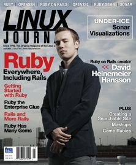

Shutdown Archive web server
Search:
Linux Journal
Issue #147/July 2006

Features
Opinions on Opinionated Software
by Kevin Bedell
The creator of Ruby on Rails doesn't rail but opines.
Introduction to Ruby
by Reuven M. Lerner
New to Ruby? Here's the primer you're looking for.
RubyGems
by Dirk Elmendorf
A rich repository of modules called RubyGems awaits you.
Ruby as Enterprise Glue
by Maik Schmidt
How to pull together a heterogenous environment with Ruby.
Indepth
Rails Writ Large
by Scott Raymond
If you want freedom, add constraints.
OpenSSL Hacks
by Anthony J. Stieber
The unsung OpenSSL command line.
The Searchable Site
by Golda Velez
Take a glimpse at Webglimpse for search capabilities for your site.
Under-Ice Sonar Visualization
by Richard R. Shell, Garner C. Bishop and Douglas B. Maxwell
What's going on down under you.
Securing OpenSSH
by Matthew E. Hoskins
It's important to ask, who's watching the guard?
Columns
Reuven Lerner's At the Forge
Creating Mashups
Marcel Gagné's Cooking with Linux
A Gem of an Idea
Dave Taylor's Work the Shell
Recognizing Blackjacks
Jon maddog Hall's Beachhead
Sinking of the
USS Proprietary
Doc Searls' Linux for Suits
Causes and Effects
Nicholas Petreley's /var/opinion
It's free. It's proprietary. No, it's two (click) two (click) two distros in one.
In Every Issue
Letters
upFRONT
New Products
Archive Index
Shutdown Archive web server
Search:
Copyright © 1994 - 2018
Linux Journal
. All rights reserved.